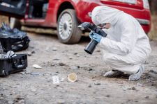

The Role of Forensic Science in the Crime World
Forensic science is an important tool in the investigation and prosecution of crimes. It involves the collection, analysis, and interpretation of physical evidence in order to provide objective, scientific information that can be used in a court of law.
Physical Evidence
Physical evidence, such as DNA, fingerprints, and trace evidence, can provide crucial information about a crime and help to identify suspects. Forensic scientists use a variety of techniques to collect and analyze physical evidence, including microscopy, chromatography, and spectroscopy.

Expert Testimony
Forensic scientists can also provide expert testimony in court. They can explain complex scientific concepts and help the jury to understand the significance of physical evidence. This can be especially important in cases where the evidence is not clear cut.
Crime Scene Investigation
Forensic scientists are often called to crime scenes to collect and analyze physical evidence. They use a variety of techniques, such as fingerprinting and bloodstain pattern analysis, to help reconstruct the crime and identify potential suspects.
